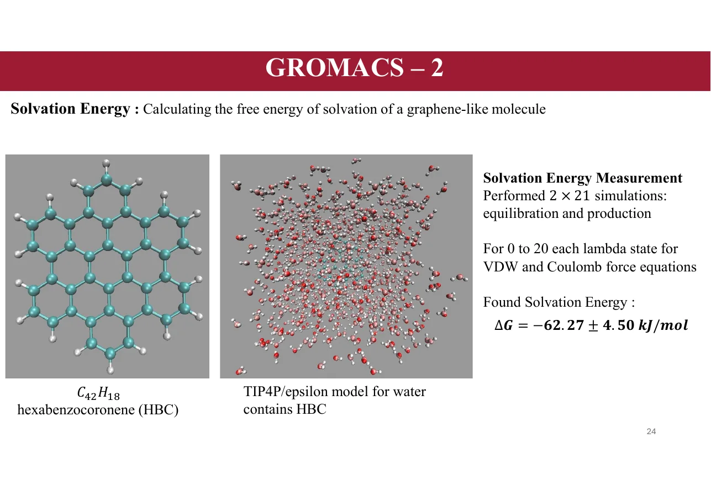
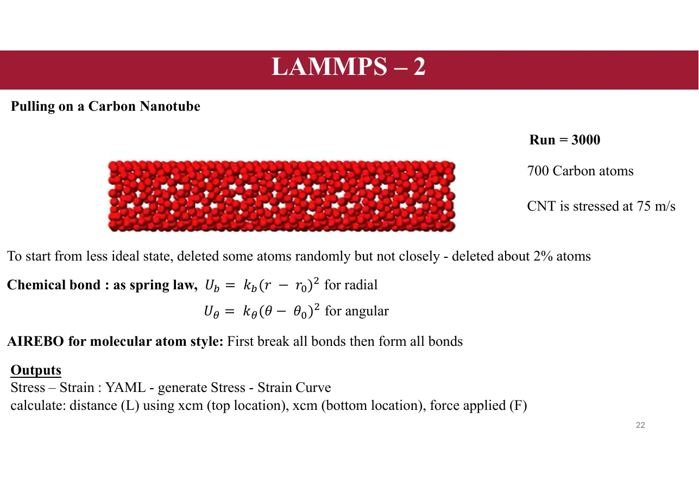

Adnan Roshid Shawon
Research
Selected computational research illustrated with results from my presentations.

GROMACS Molecular Simulation
Exploring ionic solutions, radial distribution functions, and solvation free energy. These studies support my growing focus on ion transport and functional materials.

LAMMPS Exploration
Atomistic simulations include Lennard-Jones fluids and carbon-nanotube loading, with outputs processed for structural and stress-strain interpretation.

Machine Learning for Materials
Building predictive workflows that connect composition, processing, and properties, supported by Bayesian optimization, cross-validation, and explainable AI.

Computational Fluid Dynamics
Investigating heat-transfer enhancement and pressure-drop tradeoffs in a crossflow heat exchanger using ANSYS Fluent.